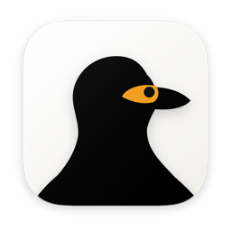
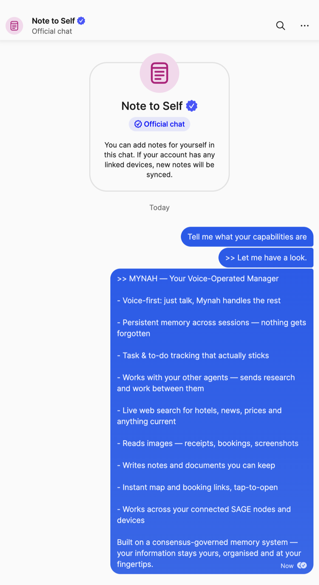

MynahTalk to it from your desk, or your phone via Signal. It remembers what you tell it, and is fully local and privacy-preserving by default — and if you have other SAGE agents on your network, you can message them too.
You tell it once. Your dad’s appointment moved to the 12th. The ferry leaves Donsak at 14:30. Sarah is allergic to shellfish, not fish.
Ask in three weeks and it knows — because it remembers across conversations instead of inside one. No re-briefing, no pasted context, no starting again because you closed a tab.

You message yourself on Signal. It answers in that thread. Nothing new on your phone, no app to open, no account to make — you already have the habit, and it just starts replying.
Hands full? Send a voice note. Want to talk? Send //call,
tap the link, and speak to it — interrupting mid-sentence like you would
anyone else.
Hand it something and it stays handed over — the booking to chase, the thing to renew before the 30th, the question you asked it to go and answer. You see what is planned, what it is working on, and what is done.
And if you run other SAGE agents, they become people you can talk to. Ask Mynah to find one, hand it the job, and tell you what came back. One place to ask, instead of a tab for each.
It runs on a Mac you own. A fresh install downloads a model and thinks on that machine, so your words, your memories and your notes never leave the house. No account, no sign-in, no server of ours in the middle.
Point it at a company’s model if you want the extra power — and it will name the company rather than let you assume. Everything it remembers is yours to read, search and delete, line by line.
Apple silicon, macOS 14 or later, left switched on — a Mac mini is the usual choice. The model and the memory come with it.